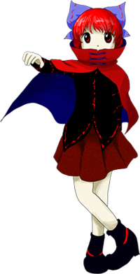

- Welcome to Touhou Wiki!
- Please register to edit. For assistance, check in with our Discord server or IRC channel.
Sekibanki
Sekibanki sekʲibaŋkʲi | |
|---|---|
|
Sekibanki in Double Dealing Character The Rokurokubi HorrorMore Character Titles | |
| Species | |
| Abilities |
Making her head fly |
| Location | |
Music Themes | |
| |
Appearances | |
| Official Games | |
| |
| Print Works | |
| |
Sekibanki (赤蛮奇) is a rokurokubi living undercover as a human in the Human Village.
General Information[edit]
Sekibanki is a Rokurokubi that dwells in the Human Village in disguise as a human. She first appeared as the Stage 2 Mid-Boss and Boss in Double Dealing Character, and then as a Day 2 Boss in Impossible Spell Card.
Personality[edit]
Sekibanki is described as being slighty prideful and with a cynical view of things. She became agggressive and somewhat more youkai-like than usual when affected by the Miracle Mallet, but it seems that she is normally recalcitrant towards both humans and youkai, and she doesn't get involved much with them.
Ability[edit]
- Making her head fly
As literally stated, Sekibanki can detach her head from her body and move it at will.
- Multiplying heads
Many of her spell cards involve creating clones of her head, to attack from different places at once. It's unknown if they are actual heads that can think on their own to some extent (Like Flandre's Taboo "Four of a Kind"), or just replicas resembling the original.
- Long neck
She has shown to be able to elongate her neck to great extent. This is especially notable in one of her spell cards.
Character Design[edit]
Origin[edit]
Although she's referred to as a rokurokubi in-game, Sekibanki has a few different inspirations. In Japanese folklore, a rokurokubi is a youkai that can stretch its neck to great extents. There's also a type of youkai called a nukekubi, which can remove its head completely. Although it may seem like Sekibanki is based exclusively on the nukekubi, she still does have the elongated neck of a rokurokubi (best seen in her spell cards Flying Neck "Extreme Long Neck" and Flying Neck "Twin Rokuro Head"). ZUN also uses the term 'Dullahan' as a translation or close approximation of her species' name in English.
Name[edit]
Sekibanki (赤蛮奇) is spelled with the characters for "red", "barbarian", and "anomaly". The characters are read using their on'yomi, or Chinese readings, unlike with most Touhou Project characters. The second character, ban (蛮), is likely taken from hitouban (飛頭蛮), which is a Chinese youkai equivalent to the rokurokubi.
Design[edit]
Sekibanki has red hair and eyes. She wears a blue bow with red trimmings and a red and blue capelet that covers part of her face. She also wears a black and red long sleeved shirt, as well as a dark red skirt and red and black boots. When she's defeated, her portrait with a slash in her skirt show that she wears a white undershirt.
Story[edit]
Games[edit]
- Double Dealing Character
- Main articles: Reimu A Arc and Reimu B Arc
Sekibanki shows in front of Reimu, asking if she's there to exterminate her. At first, she doesn't recognize her opponent as the shrine maiden of Hakurei, and attacks her after claiming that humans have become too confident because the youkai have been calm for a while. After being defeated, she understands who her opponent was, and runs away.
- Main article: Marisa A Arc
Sekibanki shows in front of Marisa, and attacks her after saying that humans' insolence made youkai retaliate. After being defeated, she understands how strong Marisa is and runs away.
- Main article: Marisa B Arc
After Sekibanki shows up again, Marisa says that she was quite surprised of seeing her flying head. The youkai attacks again, trying to scare the magician with her ability, but gets defeated and mocked. Sekibanki complains about how fearless humans have become, but Marisa reassures her saying that she is just special.
- Main article: Sakuya A Arc
Sekibanki attacks Sakuya trying to terrorize her, but the maid is far stronger than expected and defeats her.
- Main article: Sakuya B Arc
Sekibanki shows herself, asking Sakuya if she's there to exterminate her. The maid says that she's pacifying all the rampaging youkai, but Sekibanki claims that it's too late and that the youkai conterattack has already begun. Sakuya defeats her, saying that noone except Reimu would hurt her if she behaves herself.
Spin-offs[edit]
- Impossible Spell Card
Presumably from hearing or seeing a wanted sign about the mischief-making amanojaku Seija Kijin, Sekibanki appears to be one of the many youkai that tries to capture her. She uses spell cards that are considered impossible to dodge.
Spell Cards[edit]
| Name | Translated | Comments | Games | Stage | ||
|---|---|---|---|---|---|---|
| Total: 10 | ||||||
| 飛符「フライングヘッド」 | Flight Sign "Flying Head" | DDC | St. 2: E/N/H/L | |||
| 首符「クローズアイショット」 | Neck Sign "Close-Eye Shot" | DDC | St. 2: E/N | |||
| 首符「ろくろ首飛来」 | Neck Sign "Rokurokubi Flight" | DDC | St. 2: H/L | |||
| 飛頭「マルチプリケイティブヘッド」 | Flying Head "Multiplicative Head" | DDC | St. 2: E/N | |||
| 飛頭「セブンズヘッド」 | Flying Head "Seventh Head" | DDC | St. 2: H | |||
| 飛頭「ナインズヘッド」 | Flying Head "Ninth Head" | DDC | St. 2: L | |||
| 飛頭「デュラハンナイト」 | Flying Head "Dullahan Night" | DDC | St. 2: E/N/H/L | |||
| 飛首「エクストリームロングネック」 | Flying Neck "Extreme Long Neck" | ISC | St. 2 | |||
| 眼光「ヘルズレイ」 | Glinting Eyes "Hell's Ray" | ISC | St. 2 | |||
| 飛首「ツインロクロヘッド」 | Flying Neck "Twin Rokuro Head" | ISC | St. 2 | |||
Additional Information[edit]
- In folklore, nukekubi are said to have symbols on their neck where the head detaches, revealing their identity - which may explain Sekibanki's choice to wear a capelet to cover her neck.
Fandom[edit]
Official Profiles[edit]
|  | ○２面ボス ろくろ首の怪奇
赤蛮奇（せきばんき） 種族：ろくろ首 人里で人間に紛れて生活している妖怪。 性格は少々プライドが高く、人間とも妖怪とも打ち解けない。 今夏、人間の里でも宗教家達によるお祭り騒ぎがあったのだが、 しかし今回、何故か暴れてしまう。 |
Stage 2 Boss - The Rokurokubi Horror Sekibanki Species: Rokurokubi A youkai who lives in the Human Village, taking the guise of a human. Her personality is slightly prideful, and she's recalcitrant towards both humans and youkai. The previous summer, the religious leaders had been causing riots in the Human Village. However, this time, she went berserk for some reason. |
Official Sources[edit]
- 2013/05/26 Double Dealing Character trial - omake.txt (trial profile, stage 2 dialogue)
- 2013/08/12 Double Dealing Character - omake.txt (official profile, stage 2 dialogue)
| This page is part of Project Characters, a Touhou Wiki project that aims to write proper descriptions for all official characters of Touhou Project. Please keep the character page guidelines in mind when contributing. |